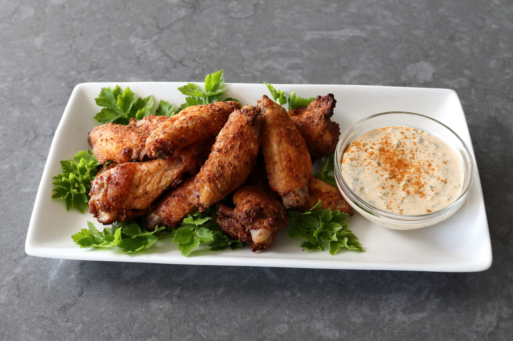

Cajun Spice Chicken Wings with Remoulade Sauce

Description
Hot, crispy wings dipped in a cold, creamy sauce provide a great contrast in texture, flavor, and temperature.
This New Orleans-inspired version of Buffalo-spiced chicken wings uses a technique that does not include a deep fryer so it's easier and less messy.
By using baking powder in the spice rub, these wings stay super crispy!
Ingredients
For the Chicken Wings
- 1 tablespoon baking powder
- 2 teaspoons kosher salt
- 2 teaspoons garlic powder
- 2 teaspoons onion powder
- 2 teaspoons ground cumin
- 2 teaspoons ground paprika
- 1 ½ teaspoons cayenne pepper
- 1 teaspoon freshly ground black pepper
- ½ teaspoon dried oregano, crushed
- ½ teaspoon dried thyme, crushed
- 2 pounds chicken wings, split and tips discarded
For the Remoulade Sauce
- 1 tablespoon capers, drained
- ½ cup mayonnaise
- 1 tablespoon Dijon mustard
- ½ teaspoon Worcestershire sauce
- 1 teaspoon Louisiana-style hot sauce
- ⅛ teaspoon cayenne pepper
- ½ teaspoon ground paprika
- 1 clove garlic, crushed
- 1 tablespoon finely sliced green onion
- 1 tablespoon finely chopped flat-leaf parsley
- 2 teaspoons freshly squeezed lemon juice
- salt to taste (Optional)
Steps
- Prepare spice rub by combining baking powder, salt, garlic powder, and onion powder, cumin, paprika, cayenne, black pepper, oregano, and thyme in a small bowl. Mix until thoroughly combined.
- Place wings in a large bowl and toss in 3 tablespoons spice rub. Toss wings with tongs until thoroughly and evenly coated. Transfer to a baking rack set over a parchment-lined sheet pan. Sprinkle a little more spice rub over each wing and let sit for 15 minutes.
- Preheat the oven to 425 degrees F (220 degrees C).
- Prepare remoulade sauce by crushing capers in a mixing bowl with the back of a fork. Add mayonnaise, Dijon, Worcestershire sauce, hot sauce, cayenne, paprika, garlic, green onion, parsley, and lemon juice; whisk to combine. Taste and add salt if needed. Cover and refrigerate until needed.
- Bake wings in the center of the preheated oven for 20 minutes. Flip and continue to bake until beautifully browned, no longer pink at the bone, and the juices run clear, 20 to 25 minutes longer. An instant-read thermometer inserted near the bone should read 165 degrees F (74 degrees C).
- Serve with remoulade sauce.
Main Page